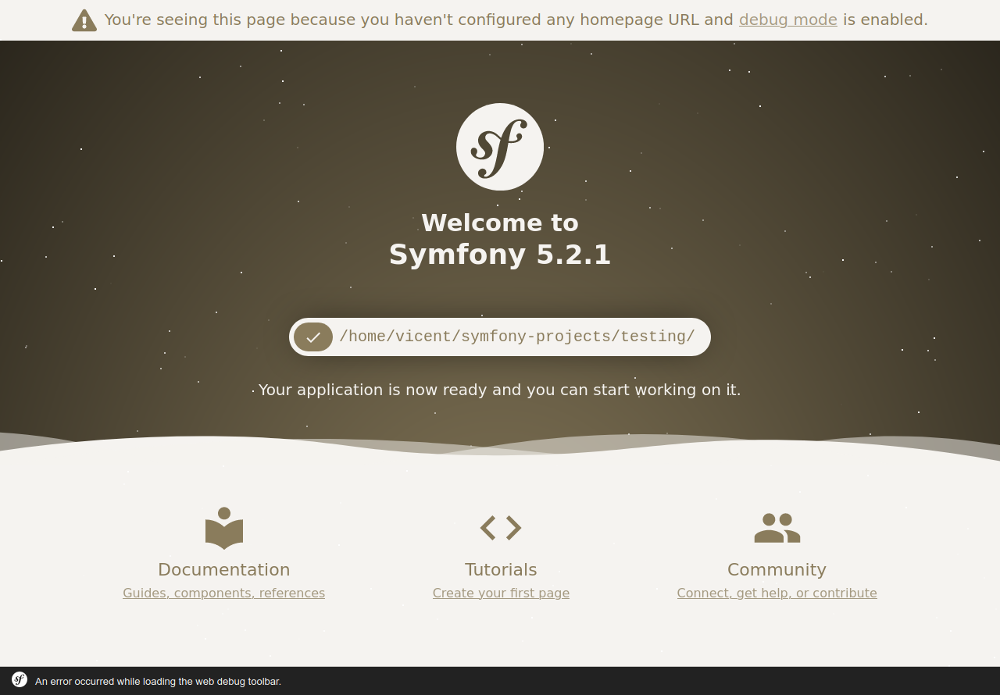

Introducció als frameworks PHP i a Symfony
Objectius
- Comprendre la importància de l'ús de frameworks per al desenvolupament d'aplicacions
- Entendre l'arquitectura de les aplicacions Symfony.
- Desenvolupar una aplicació amb Symfony.
Continguts
- Instal·lació i configuració de Symfony
- Arquitectura MVC
- Introducció a YAML
- Vistes
- Motor de plantilles Twig
- Injecció de dependències: Contenidors
- El model
- Doctrine
- Creació i validació de formularis
- Seguretat i Control d’accés
- Bundles
Continguts procedimentals
- Instal·lació i configuració de Symfony 5.
- Ús del motor de plantilles Twig per creació de vistes.
- Implementació de contenidors de serveis per a la injecció de dependències.
- Ús de l'ORM Doctrine per treballar amb la base de dades
- Creació i validació de formularis utilitzant form builder.
- Implementació de control d'accés
- Inserció de bundles en el nostre projecte
Frameworks PHP
Un framework és una eina que proporciona una sèrie de mòduls que ajuden a organitzar i desenvolupar un producte de programari. En el cas concret dels frameworks PHP, la majoria d'ells proporcionen una sèrie de comandos o eines per a crear projectes amb una estructura determinada (normalment, seguint el patró MVC), de manera que ja donen una base de treball feta, i facilitats per a poder crear el model de dades, la connexió a la base de dades, les rutes de les diferents seccions de l'aplicació, etc.
Exemples de frameworks PHP
Actualment existeix una gran varietat de frameworks PHP que triar per a desenvolupar les nostres aplicacions. Alguns dels més populars són:
- Laravel, un framework relativament recent (va ser creat en 2011), i que ha guanyat bastant popularitat en els últims anys. La seua filosofia és el poder desenvolupar projectes de forma elegant i simple. Compta amb una àmplia comunitat de suport darrere, i se li augura un futur bastant consolidat.
- Symfony, el framework que emprarem en aquest curs. Creat en 2005, compta amb més camí fet que Laravel, i una estructura més consolidada. En les seues primeres versions es presentava com un framework més monolític (s'instal·laven massa mòduls que després no necessitàvem), però recentment ha adaptat la seua estructura per a fer-la més modular. Està molt orientat al patró MVC, i a una estructura rígida i correcta de fer aplicacions.
- CodeIgniter, un framework més lleuger que els anteriors, però també amb un ampli grup de seguidors i desenvolupadors. Va ser creat en 2006 i, encara que ha patit una etapa d'abandó, ha tornat a agafar força en els últims anys, potser a causa de la seua simplicitat d'ús.
- Phalcon, un altre framework de recent creació (2012), amb una potent capacitat de processament de pàgines PHP, i la possibilitat de treballar com microframework (més lleuger, per a oferir funcionalitats molt específiques) o com framework complet. De fet, molts frameworks més antics també han incorporat recentment la possibilitat d'executar-los com microframeworks.
- CakePHP, creat en 2005, és un altre framework similar a CodeIgniter quant a simplicitat i facilitat d'ús. Té una àmplia comunitat també darrere que li dona suport.
- Zend, creat en 2006, és un altre framework bastant popular, encara que potser amb menor visibilitat que els anteriors avui dia.
- ... etc.
Quasi tots els frameworks PHP tenen una sèrie de característiques comunes, com són l'ús del patró MVC per a desenvolupar els seus projectes, la injecció de dependències per a gestionar recursos tals com a connexions a bases de dades o elements compartits per tota l'aplicació, la possibilitat de desenvolupar tant webs completes com a serveis REST accessibles des de diversos clients, etc.
En el següent article teniu una comparatova entre Laravel i Symfony: PHP Laravel VS Symfony: A Detailed Comparison of Web Development Frameworks
Quin triar?
A l'hora de decantar-nos per un o un altre framework, no ens hauríem de deixar enganyar per la seua popularitat, en termes de quota de mercat. En aqueix terreny, Symfony i Laravel probablement siguen els més beneficiats, però la corba d'aprenentatge en ells pot ser que siga més pronunciada que en uns altres a priori més senzills, com CodeIgniter o CakePHP.
Cada framework pot estar millor orientat que un altre para determinats tipus de projectes o necessitats. Si volem aprendre alguna cosa ràpida per a llançar l'aplicació com més prompte millor, potser Symfony no siga la millor opció. Si, per contra, preferim fer ús d'un framework amb una comunitat important darrere que ens puga donar suport i ens garantisca un temps de vida llarg, llavors Symfony o Laravel poden ser millors candidats.
Per què Symfony?
Arribats a aquest punt... quines característiques té Symfony que ens hagen fet triar-ho per a aquest curs enfront d'altres frameworks? El principal inconvenient que pot tenir aquest framework és, potser, la seua corba d'aprenentatge, que és bastant elevada comparada amb uns altres. No obstant això, els avantatges que ofereix compensen aquest inconvenient:
- És un framework amb molt recorregut (creat en 2005).
- Desenvolupa versions LTS (Long Term Support) que garanteixen un suport a llarg termini.
- Té una gran comunitat darrere, la qual cosa permet trobar fàcilment ajuda per a problemes que tinguem.
- Té una bona documentació. De fet, en la mateixa pàgina de Symfony es tenen disponibles alguns llibres editats pel mateix equip de desenvolupament, i una web amb la documentació oficial de l'actual versió.
- Utilitza (i anima a utilitzar) bones pràctiques de programació en els projectes.
- S'enllaça bé amb altres frameworks i llibreries de tercers molt útils, denominades bundles. Alguns exemples que utilitzarem en el curs són Twig (un potent motor de plantilles per a desenvolupar les nostres vistes) o Doctrine (un ORM per a poder mapejar les dades en objectes).
En realitat, una vegada es coneix un d'aquests frameworks, és més senzill assimilar la resta, arribat el moment. Així que Symfony pot ser un bon punt de partida. En concret, durant el curs utilitzarem la versió 6 del framework, que es recolza en PHP 8.1 per a funcionar, com veurem a continuació.
Recursos previs
A l'hora de treballar amb Symfony 6.4, necessitem tenir prèviament instal·lats en el nostre sistema una sèrie de recursos programari, com són:
- Un servidor web que suporte PHP 8.1 o posterior. En el nostre cas, utilitzarem Apache.
- Un servidor de bases de dades en el qual emmagatzemar la informació de les nostres aplicacions. Emprarem un servidor MariaDB/MySQL.
- PHP (versió 8.1 o posterior)
- El propi framework Symfony.
- Un IDE (entorn de desenvolupament) amb el qual editar el codi dels nostres projectes.
Instal·lar Apache, MySQL i PHP
Per a complir amb els tres primers requisits (Apache, MariaDB/MySQL i PHP) instal·larem un sistema XAMPP, des del seu web oficial. En el cas de la màquina virtual que tenim disponible per al curs, podem instal·lar-ho descarregant la versió per a Linux.
Es tracta d'un arxiu .run. Primer hem de fer-ho executable, escrivint
aquest comando des de la carpeta on l'hàgem descarregat (per exemple,
per a la versió 8.2.12 de XAMPP, que és la que està disponible en el
moment d'escriure aquestes anotacions):
chmod +x xampp-linux-x64-8.2.12-0-installer.run
sudo ./xampp-linux-x64-8.2.12-0-installer.run
S'iniciarà un assistent que ens guiarà en la instal·lació. Podem deixar totes les opcions marcades per defecte, excepte l'opció sobre Bitnami, que podem desmarcar, ja que no ho utilitzarem (és una espècie d'assistent que permet instal·lar altres paquets com Wordpress, Joomla, Moodle... en els nostres projectes web).
El panell de control (manager) de XAMPP
Farem ús del manager que s'haurà instal·lat per a engegar els
servidors. Haurem de cercar el manager en qüestió en la carpeta on
s'haja instal·lat XAMPP. En el cas de Linux, el manager es troba en
/opt/lampp/manager-linux-x64.run, que podem executar directament des
d'un terminal, amb permisos d'administrador. Si accedim a la carpeta
on està, el comando quedaria així:
sudo ./manager-linux-x64.run
Creant un accés directe per al manager en l'escriptori
Com pot ser incòmode anar a la carpeta de XAMPP per a engegar el manager cada vegada, podem crear un accés directe en l'escriptori. Per a Linux, existeixen diverses formes de fer-ho, vegem una: crearem un arxiu en l'escriptori (el podem cridar, per exemple "xampp.desktop"), i l'editem amb un editor de text, deixant-ho així:
[Desktop Entry]
Encoding=UTF-8
Name=XAMPP Manager
Comment=Manager XAMPP
Exec=sudo /opt/lampp/manager-linux-x64.run
Icon=/opt/lampp/htdocs/favicon.ico
Categories=Aplicacions;Programació;Web
Version=7.4
Type=Application
Terminal=true
El que hem fet és definir diversos paràmetres de configuració de
l'accés directe. Entre ells, els més destacats són la ruta cap a
l'executable (paràmetre exec) i la icona per a l'accés directe
(paràmetre Icon, on hem triat directament una icona que ja ve amb
XAMPP).
Després d'açò, fem que l'arxiu xampp.desktop siga executable (amb
clic dret, en les seues propietats, podem fer-ho), i ho executem. Pot
ser que ens demane la contrasenya per a llançar-ho, i
després ja podrem veure el manager.
Instal·lant Symfony a través de Composer
L'últim requisit per a començar a treballar amb Symfony és, òbviament, disposar del framework Symfony. Per a açò, la mateixa web ofereix algunes alternatives, però recomana instal·lar Symfony a través de l'eina Composer, que és un gestor de dependències que permet instal·lar diferents mòduls o llibreries en un projecte. Conté una base de dades en línia amb moltes llibreries disponibles centralitzades, amb el que podem indicar quin(es) volem per a cada projecte concret, i Composer les descarrega i instal·la per nosaltres. És molt similar a altres gestors com NPM (Node Package Manager), que s'aplica a llibreries per a Node o Javascript en general.
Composer pot instal·lar-se localment per a cada projecte web, o de forma global per a tot el sistema. Aquesta última opció és la recomanable en el cas de voler gestionar diversos projectes en el nostre equip, per a no haver d'instal·lar-ho en tots ells. Per a fer açò, escrivim aquests comandos des de terminal:
curl -sS https://getcomposer.org/installer | /opt/lampp/bin/php
sudo mv composer.phar /usr/local/bin/composer
El que hem fet és descarregar Composer amb el comando curl (pot ser que
necessites instal·lar el comando curl si no t'ho el sistema, mitjançant
sudo apt-get install curl). Després, movem l'arxiu
descarregat (composer.phar) a la carpeta /usr/local/bin, amb el nom
"composer", perquè en executar-ho ho trobe en el PATH del sistema.
PHP CLI
Les ferramentes de Symfony fan ús de l'intèrpret de PHP, així que hem de tenir configurat el sistema perquè siga capaç d'executar la mateixa versió que tenim al servidor Apache, on executarà l'aplicació web.
Com a últim pas, i ja que Composer utilitza l'executable de PHP, necessitem que l'executable estiga també en el PATH del sistema, per al que farem el següent:
echo "export PATH=$PATH:/opt/lampp/bin" >> ~/.bashrc
source ~/.bashrc
La primera línia afig la carpeta /opt/lampp/bin al PATH, amb el que ja
es pot localitzar el comando php a nivell global. La segona recarrega el
fitxer .bashrc per a fer efectius els canvis.
Symfony CLI
Opcionalment pots instal·lar Symfony CLI.
Des de la versió 5 Symfony inclou un binari anomenat symfony que proporciona
totes les eines per a desenvolupar aplicacions basades en Symfony de forma local.
El IDE per a desenvolupar els projectes
Finalment, per a poder desenvolupar els projectes, necessitem un entorn
de desenvolupament que ens permeta editar el codi dels fitxers que
necessitem. Podem treballar en Visual Studio Code instal·lant els plugins adients,
però com tenim la llicència educativa de PHPStorm l'emprarem per la
seua facilitat d'ús i versatilitat.
Primers passos amb Symfony
Ara que ja tenim tot el necessari per a començar a treballar amb Symfony, és hora de crear el nostre primer projecte de prova. Veurem quins passos seguir per a crear els projectes, quina estructura tenen i com provar-los.
El nostre primer projecte Symfony
Per a crear un projecte Symfony, podem descarregar directament el framework i instal·lar-lo en la nostra carpeta d'aplicació web, o bé utilitzar Composer (opció recomanada). En aquest últim cas, existeixen dues alternatives per a crear projectes Symfony:
composer create-project symfony/skeleton:"6.4.*" project-name
Si tenim clar que volem fer una aplicació tradicional (amb vistes i datamapper, per exemple)
podem afegir els components amb el paquet: symfony/webapp-pack
composer create-project symfony/skeleton project-name
cd project-name
composer require webapp
Per a començar, crearem un projecte anomenat "testing" amb la segona opció. Accedim a la carpeta de treball (podem crear una en /home/alumne/projectes-symfony, per exemple), i escrivim aquest comando des de dins d'aqueixa carpeta:
composer create-project symfony/skeleton:"^6.4" testing
cd testing
composer require webapp
Symfony Profiler
El Symfony Profiler és una eina de depuració i desenvolupament inclosa en Symfony. Proporciona informació detallada sobre el funcionament intern d'una aplicació Symfony, incloent-hi les dades de sol·licitud i resposta, les mètriques de rendiment i els missatges de registre. Només està disponible en l'entorn de desenvolupament i es pot accedir a través del navegador web. Inclou una barra d'eines i una interfície web per a una visió més detallada de les dades recopilades.
Estructura general d'un projecte Symfony
Després de completar les ordes anteriors, s'haurà creat una estructura
amb diversos directoris i fitxers dins de /home/alumne/symfony-projects/testing. Si
obrim aquest directori des del nostre IDE, podrem veure en el
panell esquerre (Explorador) l'estructura del projecte. Aquesta
estructura ha variat lleugerament al llarg de les versions
per a assemblar-se més a una estructura Unix.
En el cas concret d'un projecte Symfony 5, l'estructura queda com segueix:
- La carpeta bin conté alguns executables del nostre projecte, com console per a escriure comandos de consola, o phpunit per a llançar les proves unitàries. Analitzarem el primer d'ells més endavant en aquesta mateixa sessió.
- La carpeta config conté els arxius de configuració per als diferents àmbits en què es desenvolupe el projecte. Per defecte es defineixen 3 àmbits: dev (per a desenvolupament), prod (per a posada en producció) i test (per a proves), encara que podem afegir els que vulguem. Cada àmbit conté uns arxius de configuració YAML (veurem més endavant en què consisteix aquest format), per a poder especificar opcions concretes. Per exemple, en l'àmbit dev ens pot interessar que es mostre tota la informació necessària per pantalla, o a un arxiu, mentre que en l'ámbido prod prevaldrà més l'eficiència. En qualsevol cas, fonamentalment emprarem aquesta carpeta per a configurar rutes i serveis, com veurem en sessions posteriors.
- La carpeta migrations contindrà els canvis en la base de dades i que veurem més avant.
- La carpeta public contindrà la part pública o estàtica de la web. Ací col·locarem fulles d'estils CSS, arxius Javascript per a la part del client, pàgines estàtiques HTML o PHP...
- La carpeta src conté el codi font PHP pròpiament dit, és a dir, les classes que conformaran el nostre model de dades, i els controladors de l'aplicació, fonamentalment. També hi ha elements importants, com l'arxiu Kernel.php , que d'alguna forma controla la resta de la configuració: estableix quins bundles han d'activar-se, i per a quins àmbits, entre altres coses.
- La carpeta templates contindrà les plantilles per a les vistes, és a dir pàgines que es preprocesarán pel motor de plantilles (Twig, en el nostre cas) per a generar les vistes de l'aplicació, com veurem més endavant.
- La carpeta tests es destina al desenvolupament de proves.
- La carpeta translations s'utilitza per a opcions d'internacionalització
- La carpeta var s'empra per a arxius temporals, com per exemple arxius de caché o de log.
- La carpeta vendor s'empra per a instal·lar els bundles de tercers que ens descarreguem, com també veurem en sessions posteriors.
Provant el nostre projecte
Per a poder provar el projecte, i tenint en compte que ho hem creat fora
de la carpeta de treball per defecte de XAMPP (/opt/lampp/htdocs), hem
de crear un virtual host que apunte a la nostra carpeta. Per a açò,
seguim aquests passos:
-
Edita l'arxiu
/etc/hosts(amb permisos d'administrador) per a afegir un nou domini local per a la nostra aplicació. Cridarem al dominisymfony-testing:2. Hem d'editar un arxiu de configuració secundari de XAMPP per a donar permisos d'accés a la nostra carpeta de treball. L'arxiu en qüestió és127.0.0.1 symfony-testing/opt/lampp/apache2/conf/httpd.conf, i hem d'afegir al final la següent entrada:3. Habilita la creació d'hosts virtuals en Apache, editant l'arxiu principal de configuració<Directory "/home/alumne/symfony-projects/testing"> Options Indexes FollowSymLinks AllowOverride All Require all granted </Directory>/opt/lampp/etc/httpd.confi descomentant la línia que apareix en negreta, que està quasi al final de l'arxiu:4. Edita l'arxiu# Virtual hosts Include etc/extra/httpd-vhosts.conf/opt/lampp/etc/extra/httpd-vhosts.confi afig un nou host virtual per a la nostra aplicació. En el nostre cas, haurà de quedar-te així, si has seguit els passos anteriors per a crear el projecte en la carpeta corresponent:5. Reinicia el servidor Apache, i intenta accedir a<VirtualHost *:80> DocumentRoot "/home/alumne/symfony-projects/testing/public" ServerName symfony-testing </VirtualHost>http://symfony-testing, per a veure la pàgina d'inici:

Nota
Per a les següents aplicacions que faces, no serà necessari realitzar els passos 2 i 3, ja que amb açò ja hauràs donat permisos d'accés a la teua carpeta de treball, i deixat habilitats els hosts virtuals per al futur.
Distribuir els nostres projectes Symfony
Si fas una ullada a la grandària de la carpeta
/home/alumne/symfony-projects/testing del projecte que hem creat, comprovaràs que ocupa
bastants megues. Gran part d'aqueixa grandària es deu a les dependències que per defecte s'instal·len en crear
el projecte amb l'opció webapp, i la grandària creixerà més encara si necessitem instal·lar alguna altra dependència addicional a les quals ja venen.
omissió de directoris
Òbviament, distribuir una carpeta d'aqueixa grandària no és
còmode, ni recomanable. En lloc d'açò, el que pots fer és
ometre la subcarpeta vendor, que és on s'instal·len totes les
dependències externes. Aquest fet no suposa cap problema, ja que, una
vegada obtingut el projecte Symfony, es pot regenerar el directori amb
aquest comando (des de la carpeta principal del projecte Symfony en
qüestió):
composer install
que simplement torna a crear la carpeta vendor i reinstal·la dins les
dependències que figuren en l'arxiu composer.json , que per defecte
conté totes les dependències necessàries per al webapp. Més
endavant veurem com afegir més dependències als projectes Symfony.
La consola de Symfony
En analitzar l'estructura d'un projecte Symfony, hem vist que existeix
una carpeta bin amb un parell d'arxius executables a través de PHP. Un
d'ells s'empra per a proves unitàries (phpunit), i no ho veurem en el
curs per motius de temps, i l'altre ( console ) sí és més
àmpliament utilitzat per a ajudar-nos a certes tasques, com per exemple
crear entitats, engegar un servidor de proves, examinar serveis, etc.
Per a començar, prova a obrir un terminal i situar-te en la carpeta del projecte "testing" de Symfony que hem creat aquesta sessió. Pots fer açò directament si obris el terminal integrat en l'IDE.
Prova d'executar aquesta ordre:
php bin/console debug:autowiring
Obtindràs un llistat dels serveis que hi ha actualment predefinits en Symfony (més endavant veurem què és açò dels serveis).
Existeixen altres comandos útils, com un petit servidor PHP per a poder provar ràpidament el projecte sense necessitat d'Apache, o altres comandos per a crear certs elements de l'aplicació o examinar-los. Els anirem veient més endavant.
Problemes amb permisos
Els requeriments de permisos de Symfony són senzills d'aplicar, en cas que hi haja algun problema aquest article aporta informació d'interès Setting up or Fixing file Permissions
Introducció a YAML
La configuració dels projectes Symfony, per defecte, es defineix mitjançant fitxers YAML. Aquests fitxers són una alternativa al format XML, més llargs i enutjosos normalment, i al format PHP, més complicat d'escriure. Podríem dir que suposa un terme mitjà quant a facilitat d'ús i concreció, i són fitxers que es poden executar sobre la marxa. Açò té l'inconvenient que els possibles errors (de sintaxi, per exemple) no es mostraran fins que l'aplicació no s'execute.
L'estàndard YAML és molt ampli (es pot consultar en el seu web oficial), però per a Symfony només és necessari emprar un subconjunt reduït. Com podem veure si editem qualsevol arxiu YAML d'un projecte Symfony, la informació s'estructura en parelles clau, valor. Si la clau o el valor estan compostos per més d'una paraula separades per espais, es tanquen entre cometes dobles (encara que no és habitual).
driver: 'pdo_mysql'
default_table_options:
charset: utf8mb
collate: utf8mb4_unicode_ci
rols: [ROLE_USER, ROLE_ADMIN]
users:
admin: { password: adminpass, rols: [ROLE_ADMIN] }
user: { password: userpass, rols: [ROLE_USER] }
També es pot indicar una matriu (array) escrivint cada element en una nova línia
que comence per -.
App\:
resource: '../src/'
exclude:
- '../src/DependencyInjection/'
- '../src/Entity/'
- '../src/Kernel.php'
Els comentaris s'indiquen amb un coixinet al principi de cada línia del comentari.
# in-memory users
users:
admin: ...